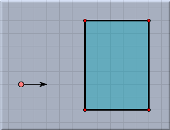
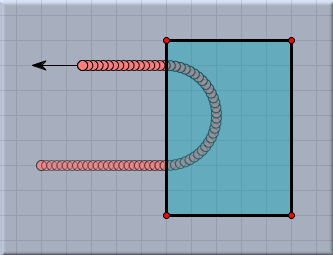
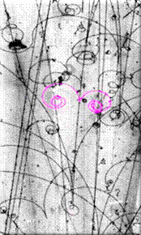
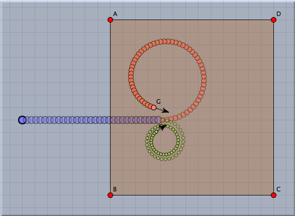
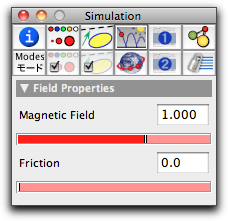

Magnetic Field

In CindyLab one can add magnetic fields that are orthogonal to the drawing surface. Magnetic fields are polygonal regions that are added just as in Polygon mode. The exact relation between the fieldstrength of the field, the velocity of the particle, its charge, and the resulting force is given by the following formula:
| force = (fieldstrength x velocity) ∗ charge |
Since the field is assumed to be orthogonal to the drawing surface, it will result in a force that is orthogonal to the movement of the particle. A charged particle will therefore move along a circular path. The following picture shows the trace of a charged particle that is shot into a region of a magnetic field.
 |  |
|
| Shooting a charged particle into a magnetic field... | ...causes circular motion |
The magnetic fields in CindyLab admit a second kind of force, one that simulates friction in the field. A particle subjected to a frictional force is slowed down by a force proportional to its speed. The relation of the friction and the particle's velocity is given by the following equation:
| force = – friction ∗ velocity |
Magnetic fields are often used in physics to observe the decay of atomic particles. If, for instance, an electrically neutral particle decays into two smaller particles, one carrying a positive charge, the other a negative charge, the two constituent particles will follow circular paths in a magnetic field if no friction is present, and they will follow spiral paths in the presence of friction. This effect is used in physics research to observe and analyze the constituents of particle decay in a bubble chamber. The following picture compares a real observed decay in a bubble chamber with a simulated decay in CindyLab and CindyScript.
 |  |
|
| Real decay | Simulated decay |
Inspecting Magnetic Fields
In the inspector one can adjust the fieldstrength and the friction values of a magnetic field. In particular, it is possible to reverse the direction of the magnetic field by assigning a negative value to it.
 |
| The magnetic field inspector |
Magnetic Fields and CindyScript
Like any CindyLab object, a magnetic field provides several entries that can be read and set by CindyScript. The following list shows the accessible fields:
| Name | Writeable | Type | Purpose |
strength | yes | real | the strength of the field |
friction | yes | real | the friction in the polygonal region |
simulate | yes | bool | turn on/off simulation for the field |
Page last modified on Sunday 04 of September, 2011 [18:01:57 UTC].
The original document is available at
http://doc.cinderella.de/tiki-index.php?page=Magnetic%20Field